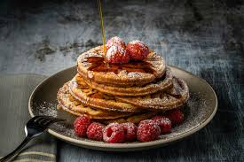

A pancake is a flat, round, thin cake made from a starch-based batter (usually flour, eggs, and milk) that is fried on both sides on a hot surface like a griddle or frying pan. Popularly served for breakfast or as a dessert, they are commonly topped with maple syrup, fruit, or sugar and are known for being easy to make and universally popular.